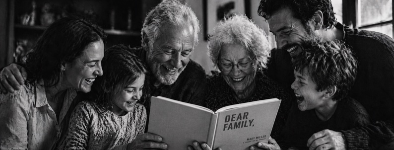

A Gift from 24 Stories

5 Stories
Worth Saving
Worth Saving
The questions your family hasn't thought to ask. The stories they cannot afford to lose.

The questions your family hasn't thought to ask. The stories they cannot afford to lose.
Over a career spent writing and editing for some big-name magazines, I interviewed everyone — celebrities, politicians, factory workers, warehouse pickers, eccentrics, visionaries. I sat in six-star hotel suites and industrial freezers. And I learned one thing quickly:
The worst interviews are the ones that produce 'yes', 'no', and 'sure' answers. The best ones are where someone works through their own history — the choices they made, how they felt, what surprised them, what broke them, what made them who they are.
These are the stories that stick. The stories with drama, surprise, humour, and emotion. Ordinary moments that turned out not to be ordinary at all. Your family is starving for these stories.
That is where 24 Stories began. Not a questionnaire. Not a biography. A tapestry of 24 smaller portraits that collectively show who your loved one really is — and therefore who you are.
These five questions are designed to inspire stories that reveal, delight, and entertain. Each one is a trigger that can go hundreds of miles wide and just as deep.
Try it out. Choose one. Sit with someone you love. Ask. Then listen.
I hope you use and enjoy this gift.
With warmth, Tamara Rothbart, Founder — 24 Stories
What is the most trouble you ever got into? Were you a rebel, or was this a singular act of rebellion? Was it even your fault? What happened — and what were the consequences?
Why this question worksIt can go in any direction.
It might reveal a childhood household run on iron rules — or one with no rules at all. It might be a school story, a stolen car, a moment of pure mischief in a small town where even the police knew your name.
Whatever shape it takes, it almost always tells you more about the world they grew up in than any straight question about their childhood ever could.
What is the kindest, most heroic thing you ever did for someone? Were you recognised for your valour, or were your heroics unsung? What prompted you to behave the way you did, and what was the reaction?
Why this question worksMost people find it almost impossible to speak about themselves in complimentary terms. Nobody wants to sound like they are blowing their own trumpet. But the people who love us are hungry to know about our quiet courage.
This question gives the narrator permission to tell that story without it feeling like a boast.
More often than not, what comes out surprises everyone — including the person telling it.
Was there a time when you had very little money — or suddenly a great deal more than you expected? What did that period teach you about yourself?
Why this question worksMoney stories are almost never about money. They are about pride, sacrifice, ambition, resourcefulness, and what people are willing to do for the people they love.
They can also be surprisingly funny or nostalgic: a story about making ends meet in a tiny flat, or about a windfall that arrived at exactly the right moment, reveals more about character and values than almost any other question — and opens a window into a world your children or grandchildren may never have seen.
What is the most danger you have ever been in? Was it a situation of your own making, or circumstances beyond your control? What happened, how did you get to safety, and how did the experience change your outlook on life?
Why this question worksThis question has legs. It can go anywhere: cancer, war, a wrong turn in an unfamiliar city at two in the morning, a relationship that became a trap, a health crisis, a moment of pure reckless adventure that could have ended differently.
What makes it remarkable is not the drama of what happened — it is what the answer reveals about resilience, faith, miracles, and the will to live.
People who have never spoken about these moments often find, for the first time, that they have something extraordinary to say.
Not the wedding day. Not the anniversary speech. Tell me about the moment you knew — really knew — that you loved someone.
Why this question worksLove stories told from the beginning are almost always the same. But love caught in a single unguarded moment — a Tuesday morning, an argument that ended differently than expected, a hand held in a hospital corridor — that is where the real story lives.
This question works for romantic love, but it does not have to stay there. It can go to a parent, a child, a friend, a place, even a version of yourself you had to let go of.
The answers are almost always unforgettable.

The crown might have been a cereal box and the cape, an old curtain — but I was the self-declared Queen of the Back Garden and sole ruler of everything beyond the stoep. I was going to change the world and save it.
4There are people who arrive in a room and immediately rearrange it — not the furniture, but the air itself. The temperature changes. The light seems to fall differently. You notice it before you can name it, and afterwards you cannot remember what the room felt like before they walked in.
She was one of those people. I did not know it then. I was eight years old and I was the queen of the back garden and the only politics I understood were the ones that governed who got the last biscuit and whether the cat was allowed inside after five o'clock.
But I remember the moment. I remember the light.
 5
5
You just read five questions. Imagine 26.
Each week for six months, your loved one receives a prompt, a real editor reads every word, and their story goes out to the whole family exactly as they told it.
At the end: a physical hardcover book. Their voice. Their life. Forever yours.
Give someone you love the gift of 24 Stories.
hello@24stories.co.za · WhatsApp +27 82 375 8320